Koordinatenbild Ahornblatt: Punkte eintragen, verbinden, Bild entdecken, Klasse 5–7

Koordinatenbild Luftballon: Punkte eintragen, verbinden, Bild entdecken, Klasse 5–7

Klammerkarten: Kochen und Backen – Klammerkarten – Klasse 1–4
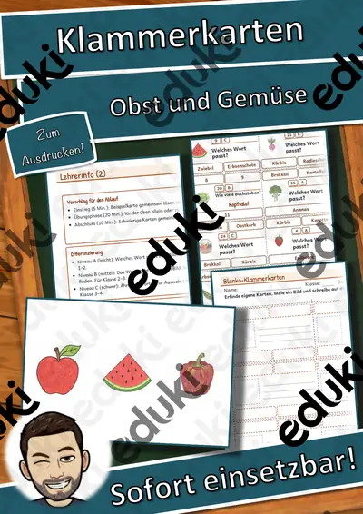
Klammerkarten: Obst und Gemüse – Klammerkarten – Klasse 1–4
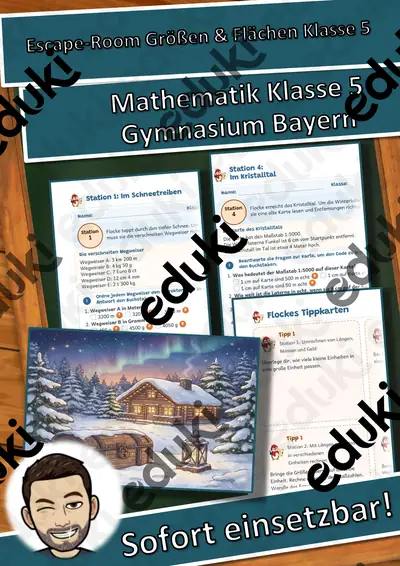
Escape-Room Größen & Flächen Klasse 5 – Mathematik Klasse 5 Gymnasium: 6 Stationen, 2 Schlösser

Himmel und Hölle: Im Garten – Himmel und Hölle – Klasse 1–4

Klammerkarten: Im Garten – Klammerkarten – Klasse 1–4
Koordinatenbild Tulpe: Punkte eintragen, verbinden, Bild entdecken, Klasse 5–7
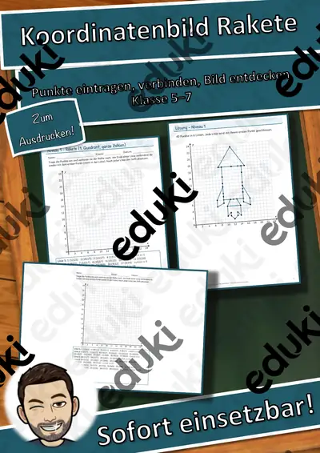
Koordinatenbild Rakete: Punkte eintragen, verbinden, Bild entdecken, Klasse 5–7
Escape-Room Die Stimmen im Winterwald – Deutsch Klasse 6 Gymnasium: 6 Stationen, 2 Schlösser
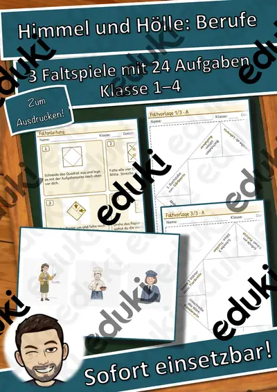
Himmel und Hölle: Berufe – Himmel und Hölle – Klasse 1–4

Klammerkarten: Berufe – Klammerkarten – Klasse 1–4
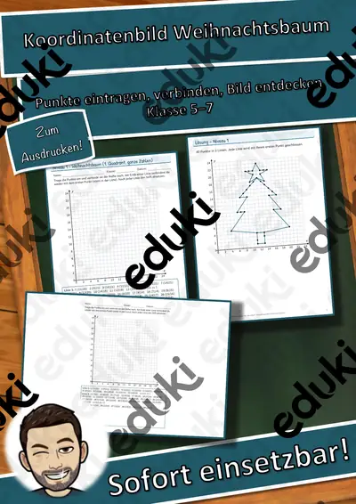
Koordinatenbild Weihnachtsbaum: Punkte eintragen, verbinden, Bild entdecken, Klasse 5–7
Koordinatenbild Schulranzen: Punkte eintragen, verbinden, Bild entdecken, Klasse 5–7
Koordinatenbild Laterne: Punkte eintragen, verbinden, Bild entdecken, Klasse 5–7
Koordinatenbild Koffer: Punkte eintragen, verbinden, Bild entdecken, Klasse 5–7
Koordinatenbild Kerze: Punkte eintragen, verbinden, Bild entdecken, Klasse 5–7
Koordinatenbild Osterhase: Punkte eintragen, verbinden, Bild entdecken, Klasse 5–7

Klammerkarten: Sommer – Klammerkarten – Klasse 1–4
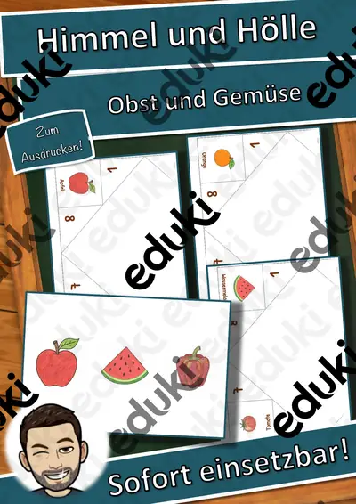
Himmel und Hölle: Obst und Gemüse – Himmel und Hölle – Klasse 1–4

Escape-Room Schreiben in Klasse 2 – Deutsch Klasse 2 Grundschule: 6 Stationen, 2 Schlösser
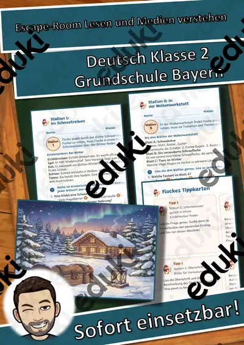
Escape-Room Lesen und Medien verstehen – Deutsch Klasse 2 Grundschule: 6 Stationen, 2 Schlösser
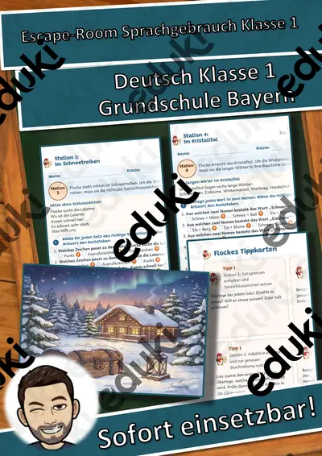
Escape-Room Sprachgebrauch Klasse 1 – Deutsch Klasse 1 Grundschule: 6 Stationen, 2 Schlösser
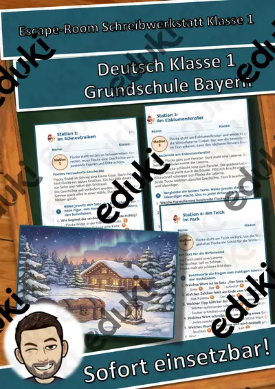
Escape-Room Schreibwerkstatt Klasse 1 – Deutsch Klasse 1 Grundschule: 6 Stationen, 2 Schlösser
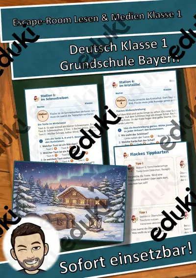
Escape-Room Lesen & Medien Klasse 1 – Deutsch Klasse 1 Grundschule: 6 Stationen, 2 Schlösser
Escape-Room Prozent, Daten & Diagramme – Mathematik Klasse 6 Gymnasium: 6 Stationen, 2 Schlösser
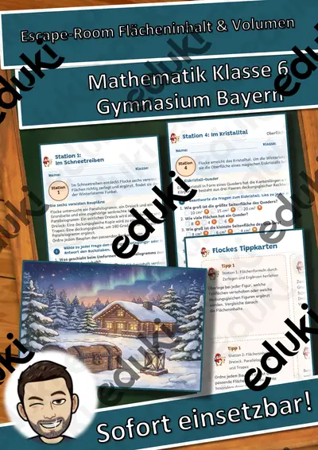
Escape-Room Flächeninhalt & Volumen – Mathematik Klasse 6 Gymnasium: 6 Stationen, 2 Schlösser
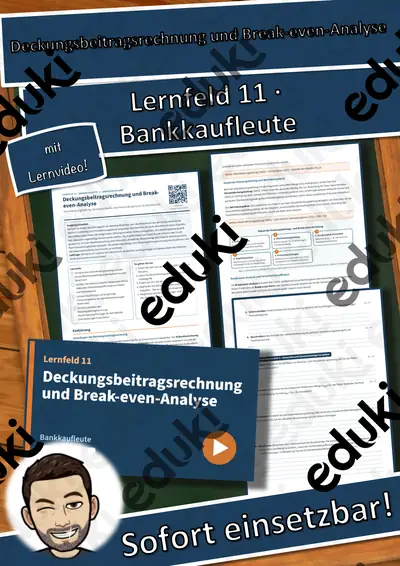
LF 11 Bankkaufleute: Deckungsbeitragsrechnung und Break-even-Analyse – Übungen, Lösungen + Lernvideo
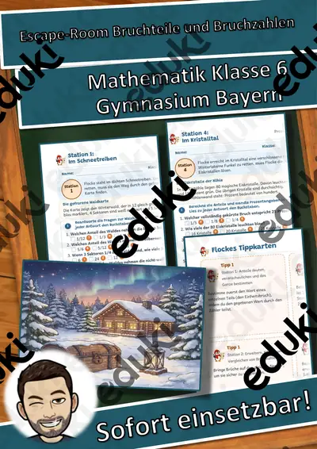
Escape-Room Bruchteile und Bruchzahlen – Mathematik Klasse 6 Gymnasium: 6 Stationen, 2 Schlösser
LF 4 Bankkaufleute: Verzinsung von Sparanlagen und Abgeltungsteuer – Übungen, Lösungen + Lernvideo
Escape-Room Multiplikation & Division – Mathematik Klasse 5 Gymnasium: 6 Stationen, 2 Schlösser
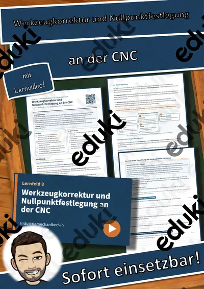
LF 8 Industriemechaniker/-in: Werkzeugkorrektur und Nullpunktfestlegung an der CNC – Übungen, Lösungen + Lernvideo
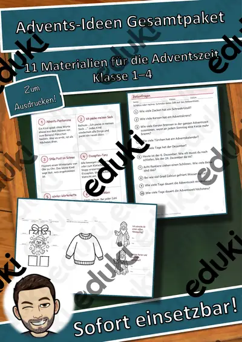
Advents-Ideen Gesamtpaket: 11 Materialien für die Adventszeit, Klasse 1–4

Male weiter!: 5 Bildanfänge für Fantasie-Bilder, Klasse 1–4

Zeichen-Duell im Advent: Genau beschreiben, genau zuhören, Klasse 2–4

Winter-Fragekarten: 32 Fragen für Kugellager und Sitzkreis, Klasse 2–4

Stadt, Land, Winter: Das Wörterspiel für die Adventszeit, Klasse 2–4

Wichteln in der Klasse: Lesetext, Regeln, Lose und Steckbrief, Klasse 2–4

Lolli-Karten: Süße Grüße zum Nikolaus und zu den Ferien, Klasse 1–4

Winter- und Weihnachtsquiz: Schätzen, rechnen, wahr oder falsch, Klasse 3–4

Mein Rückblick-Baum: Nachdenken über das Jahr, Klasse 2–4
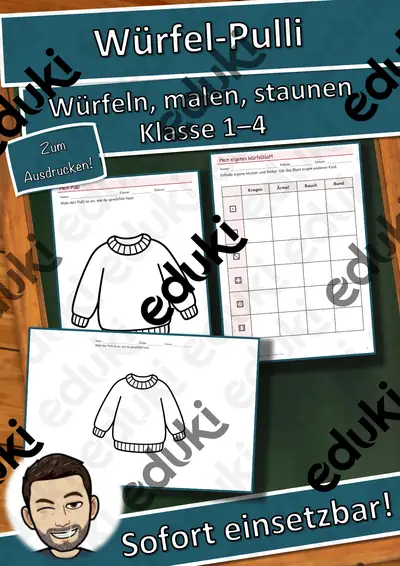
Würfel-Pulli: Würfeln, malen, staunen, Klasse 1–4

Spiele-Adventskalender: 24 Mini-Spiele ohne Vorbereitung, Klasse 1–4
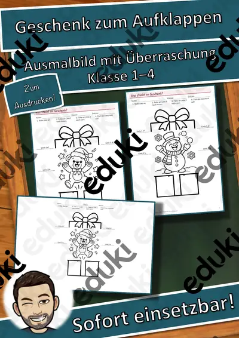
Geschenk zum Aufklappen: Ausmalbild mit Überraschung, Klasse 1–4

LF 12 Industriekaufleute: Brutto-Netto-Entgeltberechnung und Sozialversicherung – Übungen, Lösungen + Lernvideo

LF 3 Industriekaufleute: Beschaffungsplanung: Bestellpunkt- und Bestellrhythmusverfahren – Übungen, Lösungen + Lernvideo

Escape-Room Geometrie-Escape 5 – Mathematik Klasse 5 Gymnasium: 6 Stationen, 2 Schlösser
Escape-Room Zahlen und Zahlensysteme – Mathematik Klasse 5 Gymnasium: 6 Stationen, 2 Schlösser
Keine Materialien gefunden – versuch einen anderen Suchbegriff oder Filter.